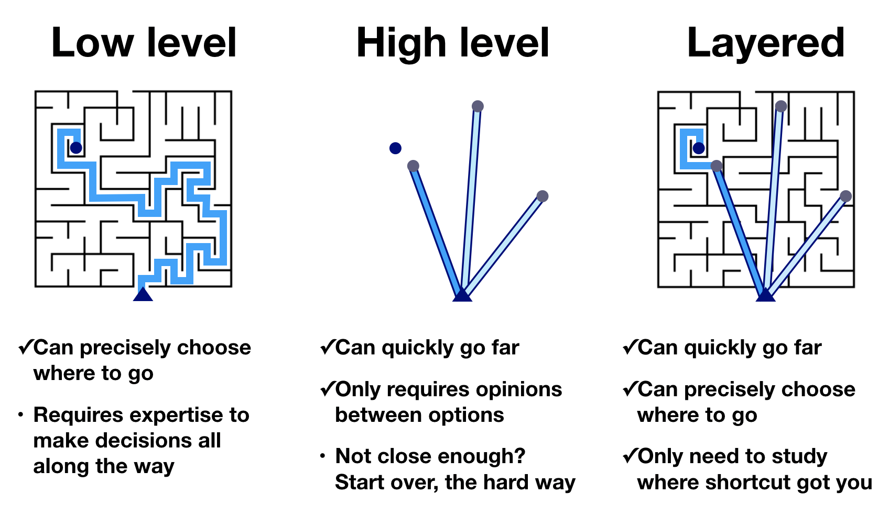

import numpy as npimport scipy.specialimport polars as pl# Our main plotting package (must have explicit import of submodules)import bokeh.ioimport bokeh.plotting# Enable viewing Bokeh plots in the notebookbokeh.io.output_notebook()
Loading BokehJS ...
7.1 High-level and low-level plotting packages
As a demonstration of what I mean by high-level and low-level plotting packages, let us first think about one of our tasks we did with Polars with the facial matching data set. We computed the median percent correct for those with and without insomnia. Here’s the code to do it.
Literally just a few lines of code. Now what if we tried to do it without Polars? I won’t even go through the many lines of code necessary to read in the data. Consider just this one line.
There are elementary tasks that go into it if we were to code it up without using Polars’s delicious functionality. We can loop over the rows in the data frame with a for loop, check to see what the value of the insomnia column is with an if statement, put the value in the percent correct field into an appropriate array based on whether or not the subject suffers from insomnia, and then, given those arrays, sort them and pull out the middle value. Under the hood, all of those steps take place, but because we use Polars’s high-level functionality, those details are invisible to us, and glad we are of that.
Now, say we want to make a plot of some data. You can imagine that there are many many steps to building that. One way you could build a plot is to hand-generate an SVG file that is a set of specifications for lines and circles and text and whatnot that comprises a plot. (I have actually done this before, writing a C program that hand-generated SVG, and it was paaaaainful.) That would be a very low-level way of generating a plot. Plotting libraries in Python usually take care of the rendering part for you, either rendering the plot as SVG, PDF, PNG, or other formats, including interactive ones that use JavaScript and HTML Canvas that can be viewed in a browser. The plotting libraries then vary in their level of abstraction from the data set.
Lower-level plotting libraries typically are more customizable, but require more boilerplate code to get your data plotted and are therefore more cumbersome. Higher-level plotting libraries aim to make it easier to move directly from a data frame to a plot. Because of this streamlining, though, they are often more difficult to customize.
The developers of HoloViz made a nice graphic for this concept (Copyright PyViz authors, downloaded here).

Figure 7.1: Routes to making a plot, copyright PyViz authors.
Using a low-level plotting library, you can get to any graphic you like, but it takes many steps to do so. Using a high level library, you can rapidly get to many, if not most, of the graphics you like in very few steps. However, you cannot get to all graphics. In a layered approach, in which the higher level libraries give you access to the lower level customizations, you can get to any graphic, and can do so quickly. The layered approach requires proficiency in using the low-level and high-level libraries.
7.2 Bokeh and the summer school
One debate I have every time I teach data visualization is what plotting packages, high-level or low-level, to use. I decided to almost exclusively Bokeh, a low-level plotting library first for a few reasons.
Though low-level, generating plot you might like to construct is fairly straightforward. (Read: it’s not that bad for quickly making plots.)
By being familiar with a lower-level plotting package, you can then take a layered approach as you learn a higher-level package.
Importantly, note that Bokeh’s submodules often have to be explicitly imported, as we did in the code cell at the top of this notebook. Not also that if you want your plots to be viewable (and interactive) in the notebook, you need to execute
bokeh.io.output_notebook()
at the top of the notebook (as we have done). Finally, note that we also have to have installed the Bokeh JupyterLab extension.
7.3 Bokeh’s grammar and our first plot with Bokeh
Constructing a plot with Bokeh consists of four main steps.
Creating a figure on which to populate glyphs (symbols that represent data, e.g., dots for a scatter plot). Think of this figure as a “canvas” which sets the space on which you will “paint” your glyphs.
Defining a data source that is the reference used to place the glyphs.
Choose the kind of glyph you would like.
Annotate the columns of data source to determine how they are used to place (and possibly color, scale, etc.) the glyph.
After completing these steps, you need to render the graphic.
Let’s go through these steps in generating a scatter plot of confidence when incorrect versus confidence when correct for the face matching under sleep deprivation study. So you have the concrete example in mind, the final graphic will look like this
Our first step is creating a figure, our “canvas.” In creating the figure, we are implicitly thinking about what kind of representation for our data we want. That is, we have to specify axes and their labels. We might also want to specify the title of the figure, whether or not to have grid lines, and all sorts of other customizations. Naturally, we also want to specify the shape of the figure.
(Almost) all of this is accomplished in Bokeh by making a call to bokeh.plotting.figure() with the appropriate keyword arguments.
# Create the figure, stored in variable `p`p = bokeh.plotting.figure( frame_width=400, frame_height=300, x_axis_label='confidence when correct', y_axis_label='condifence when incorrect')
Now that we have set up our canvas, we can decide on the data source. We will use the data frame, df as our data source.
We will choose dots (or circles) as our glyph. This kind of glyph requires that we specify which column of the data source will serve to place the glyphs along the \(x\)-axis and which will serve to place the glyphs along the \(y\)-axis.
We choose the 'confidence when correct' column to specify the \(x\)-coordinate of the glyph and the 'confidence when incorrect' column to specify the \(y\)-coordinate. We already made this decision when we set up our axis labels, but we did not necessarily have to make that decision at that point.
Steps 3 and 4 are accomplished by calling one of the glyph methods of the Bokeh Figure instance, p. Since we are choosing dots, the appropriate method is p.scatter(), and we use the source, x, and y kwargs to specify the positions of the glyphs.
p.scatter( source=df.to_dict(), x='confidence when correct', y='confidence when incorrect');
Note that the source must be a ColumnDataSource, a special Bokeh class. If we pass in a dictionary (or Polars data frame) for the source keyword argument, Bokeh converts it to a ColumnDataSource. Therefore, we use the to_dict() method to convert the Polars data frame to a dictionary.
Now that we have built the plot, we can render it in the notebook using bokeh.io.show().
bokeh.io.show(p)
In looking at the plot, notice a toolbar to right of the plot that enables you to zoom and pan within the plot.
7.4 The importance of tidy data frames
It might be clear for you now that building a plot in this way requires that the data frame you use be tidy. The organization of tidy data is really what enables this and high level plotting functionality. There is a well-specified organization of the data.
7.5 Code style in plot specifications
Specifications of plots often involves calls to functions with lots of keyword arguments to specify the plot, and this can get unwieldy without a clear style. You can develop your own style, maybe reading Trey Hunner’s blog post again. I like to do the following.
Put the function call, like p.scatter( or p = bokeh.plotting.figure( on the first line.
The closed parenthesis for the function call is on its own line, unindented.
Any arguments are given as kwargs (even if they can also be specified as positional arguments) at one level of indentation.
Note that you cannot use method chaining when instantiating figures or populating glyphs.
If you adhere to a style (which is roughly the style imposed by Black), it makes your code cleaner and easier to read.
7.6 Coloring with other dimensions
Let’s say we wanted to make the same plot, but with orange circles for insomniacs and blue circles for normal sleepers. To do this, we take advantage of two features of Bokeh.
We can make multiple calls to p.scatter() to populate more and more glyphs.
p.scatter(), like all of the glyph methods, has many keyword arguments, including color and legend_label, which will enable us to color the glyphs and include a legend.
We can loop through the data frame grouped by 'insomnia' and populate the glyphs as we go along.
# For conveniencex ="confidence when correct"y ="confidence when incorrect"# Make figurep = bokeh.plotting.figure( width=400, height=300, x_axis_label=x, y_axis_label=y,)# Add glyphscolors = {'normal sleepers': '#1f77b4', 'insomniacs': 'orange'}for (insom,), sub_df in df.group_by('insomnia'): category ="insomniacs"if insom else"normal sleepers" p.scatter( source=sub_df.to_dict(), x=x, y=y, color=colors[category], legend_label=category, )bokeh.io.show(p)
We got the plot we wanted, but the legend is clashing with the data. Fortunately, Bokeh allows us to set attributes of the figure whenever we like. (We will further discuss styling Bokeh plots in a future lesson.) We can therefore set the legend position to be in the upper left corner. We will also set the click_policy for the legend to be 'hide', which will hide glyphs if you click the legend, which can be convenient for viewing cluttered plots (though this one is not cluttered, really).
Bokeh’s interactivity is one of its greatest strengths. While we are plotting confidences when correct and incorrect, we have colored with insomniac status. We might also like to have access to other information in our (tidy) data source if we hover over a glyph. Let’s say we want to know the participant number, gender, and age of each participant. We can tell Bokeh to give us this information by adding tooltips when we instantiate the figure.
The syntax for a tooltip is a list of 2-tuples, where each tuple represents the tooltip you want. The first entry in the tuple is the label and the second is the column from the data source that has the values. The second entry must be preceded with an @ symbol signifying that it is a field in the data source and not field that is intrinsic to the plot, which is preceded with a $ sign. If there are spaces in the column heading, enclose the column name in braces. (See the documentation for tooltip specification for more information.)
After you create your plot, you can save it to a variety of formats. Most commonly you would save them as PNG (for presentations), SVG (for publications in the paper of the past), and HTML (for the paper of the future or sharing with colleagues).
To save as a PNG for quick use, you can click the disk icon in the tool bar.
To save to SVG, you first change the output backend to 'svg' and then you can click the disk icon again, and you will get an SVG rendering of the plot. After saving the SVG, you should change the output backend back to 'canvas' because it has much better in-browser performance.
p.output_backend ='svg'bokeh.io.show(p)
Now, click the disk icon in the plot above to save it.
After saving, we should switch back to canvas.
p.output_backend ='canvas'
You can also save the figure programmatically using the bokeh.io.export_svgs() function. This requires additional installations, so we will not do it here, but show the code to do it. Again, this will only work if the output backed is 'svg'.
Finally, to save as HTML, you can use the bokeh.io.save() function. This saves your plot as a standalone HTML page. Note that the title kwarg is not the title of the plot, but the title of the web page that will appear on your Browser tab.